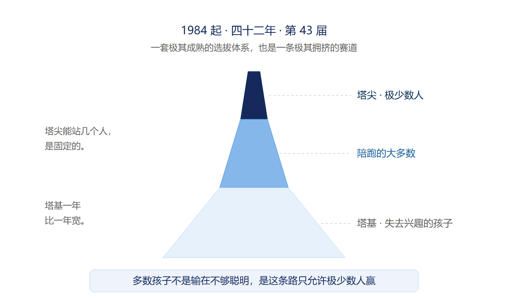
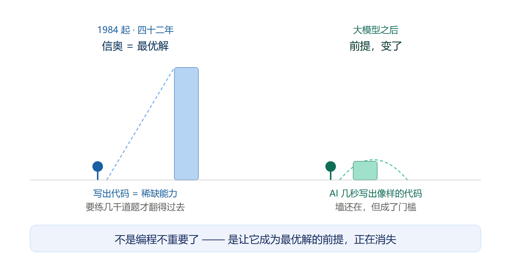
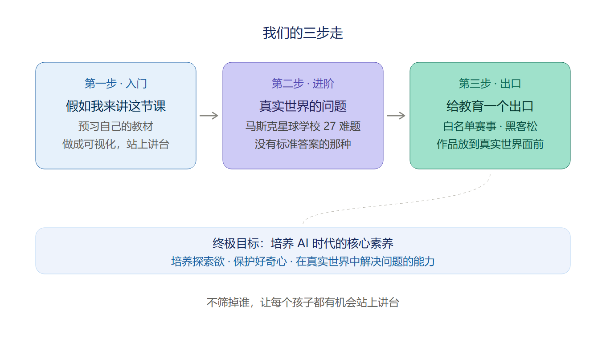
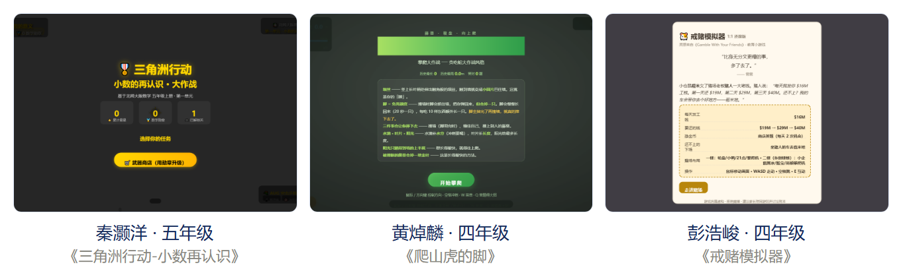

四十二年，它一直是最优解
开启 AI 原生教育 · 第 1 篇
我做科技教育十五年，带过两千多个孩子做项目。这十五年，有一句话我越来越不敢说满：一个孩子来学编程、学信息学，最后能走到哪一步。
一、它曾经是最优解
先把立场说清楚。在大模型出现之前，让孩子学信息学竞赛，是最优选择。不是"之一"，是最优。
从 1984 年创办到今年 7 月在青岛办完第 43 届，这条路走了四十多年，选拔出一批又一批极优秀的孩子。我尊敬这条路上所有的老师和学生，我自己的学生里也有人在走。
它凭什么是最优？因为那时候能把代码写出来本身就是一道高墙。这个能力稀缺、可衡量、有清晰的上升通道。而训练它的过程也确实在练真东西：把模糊问题拆成清晰的步骤，考虑边界，考虑最坏情况，错了就改。
所以我不是在否定信奥。我只想说两件它绕不开的事。
第一件，它是座塔。塔尖能站几个人是固定的，这几年往下看，塔基却一年比一年宽。今年 7 月第 43 届 NOI 在青岛落幕，金牌从 50 枚增加到 54 枚，可进国家集训队、拿保送资格的仍然只有前 50 名。第 51 到 54 名有金牌，没保送。
名额变多了，塔尖没有。
真正让我难受的不是孩子没拿到奖。是有孩子因为在某一次选拔里没考好，从此认定自己不适合计算机，把一扇本来开着的门自己关上了。四十多年里，这样的事一直在发生。

二、变的是前提，不是编程
这两年家长问我最多的问题：孩子还要不要学编程。
我的答案变了。不是编程不重要了，编程从来没有像今天这样重要过。变的是另一件事：当大模型能在几秒钟里写出一段像样的代码，把题刷熟、把代码写对这件事的回报正在肉眼可见地降低，因为它正在被 AI 直接接管。过去那道高墙立得住，是因为写代码本身稀缺。现在它正在变成一道门槛。
这件事信奥圈自己看得最清楚。今年 7 月的 NOI，同期论坛主题就叫「信息学奥赛的本质与未来：以 AI 为镜」；NOI 主席杜子德在开幕式上说，要防止以技术工具替代独立思考，要着力培养运用计算思维解决实际问题的能力。我读到这两条的时候，心里只有一个念头：原来不是我一个人在想这件事。
那么当写代码不再是壁垒，什么才是。我的答案是理解 AI、掌握 AI、驾驭 AI，它正在从加分项变成这一代孩子的必选项。这里说的驾驭，不是让 AI 替他写，是站在它上面去做以前做不了的事。
但还有一件事更重。回头看这四十多年，信奥真正留下来的最宝贵的东西，不是金牌，也不是某道题的解法，而是一套被反复验证过的、培养孩子自主学习能力的实践。走这条路的孩子没人能替他学，他得自己啃、自己查、自己想，得独自熬过那段谁也帮不上他的时间。
到了 AI 时代这份能力反而更重要：当答案几秒钟就递到面前，自己去找答案这件事更需要被训练。可仅仅有自主学习能力已经不够了。它解决的是能不能学下去，而 AI 时代真正稀缺的，是还想不想学下去。当 AI 什么都能替他做出来，一个孩子凭什么还要自己去搞懂一件事？

三、我们在做的三件事
当那个前提开始消失，当热情变得比能力更稀缺，我决定不再只沿着那条路走。我把它叫做 AI 原生教育。
它不是一个新科目，也不是在原来的课上加一个 AI 工具。它要培养的是探索欲、好奇心，以及在真实世界里解决问题的能力。这三件事有个共同点，没有一件是"做得更快"。AI 可以让孩子学得更快、刷得更多，但那不是我们缺的。我们缺的是孩子还愿不愿意问为什么，还敢不敢对一个没有答案的问题下手。
具体三步。
第一步，翻转课堂，主题叫「假如我来讲这节课」。孩子从课本里挑一节，先自己啃下来，再动手做成能演示的东西，最后站上去讲给同学听。讲到哪里卡住，就说明哪里其实没真懂，回去改，再讲一遍。
为什么是讲？讲给别人听是公认记得最牢的学习方式。可这么多年课堂上只有老师能讲，不是学生讲不了，是「讲」前面堆着太多成本：找例子、画示意、做演示、准备板书。老师备一节课要好几个小时，何况一个四年级的孩子。AI 把这块成本打下来了，孩子说一句「我想让大家看懂小数到底是怎么回事」，十几分钟就能有个能跑的东西。
AI 不是替孩子学，是让孩子第一次够得着讲台。
为了让这件事落地，我们做了件笨事：把深圳九年义务教育十个学科、1 到 9 年级、89 册教材，1.7 个 G，全部搬上网，免费，不用注册，手机上能翻。因为翻转课堂有个硬前提，孩子预习的必须是他自己学校发的那一版。深圳数学在用北师大版，英语沪教牛津版，科学教科版，地理湘教。错一版，整条链就断了。
第二步，把孩子从有标准答案的问题，带到没有标准答案的问题。我们整理了一组课题，灵感来自马斯克的 Astra Nova 星球学校：27 个真实世界的难题，0 个标准答案。比如一块披萨要分给人数不同、胃口不同的人，怎么分才公平？公平是平均分，还是按需分？这类问题 AI 也给不出标准答案，孩子要做的第一件事不是求解，是定义问题：我到底要解决什么。
第三步，给教育一个出口。孩子做出了作品，然后呢？如果它最后只是躺在家长的手机相册里，这件事就断了。我们正在把作品接到两个真实的地方：一是教育部白名单里的自然科学素养类赛事，比如全国青少年人工智能创新挑战赛、全球发明大会；二是各类青少年黑客松。
这里有个反直觉的地方：白名单赛事明确规定，竞赛结果不得作为中小学招生入学依据，也不能用于高考加分。恰恰因为不能加分，它才是一个干净的出口。孩子去参赛不是为了换一块敲门砖，是为了把作品放到真实世界面前，被陌生人评审、提问、比较。
第一步是入门，第二步是练本事，第三步才是闭环。孩子的努力，需要一个被看见的地方。

四、三个孩子
五年级的灏洋做了《三角洲行动-小数再认识》。答对小数题补充弹药，答错就被小兵围住，攒够勋章可以换瞄准镜、消音器、大弹匣。
这个作品的开屏画面上，孩子自己写了一行字：基于北师大版数学 五年级上册·第一单元。
他的老师写完点评，第一句是：
北师大版五年级上册，就是我们刚搬上网的那批深圳教材里的其中一册。
三节课的过程记录里写着：第一次课想清楚把小数藏进三角洲任务，第二次课写代码搭战斗逻辑、反复调试让反馈更及时，第三次课调难度曲线和音效。三节课，他做的事叫设计一个让人愿意学的东西。
四年级的焯麟读完课文《爬山虎的脚》，做了款攀爬游戏：吃阳光长高，撞墙会掉「脚」，脚没了就摔下去。过程记录里写着他反复调整撞墙掉脚的规则，让游戏既紧张又公平。一个四年级的孩子，在做公平性设计。
还是四年级的浩峻做了《戒赌模拟器》：一只叫糯米的小仓鼠欠了赌人一笔钱，轮盘、21 点、答题打工，账本永远算不过，还不上就得坐上那辆去苞米地的车。他的打磨记录是反复调整债务滚雪球的速度和赚钱难度。他不只是在玩游戏，他在调一个系统的参数。

这三步我们走到哪了，我说清楚：第一步教材刚上线，翻转课堂正在打通，作品墙上还没有「来自哪一册哪一节」的标记；第二步 27 个课题整理好了，还没排成完整的课程；第三步还在接。
我不想把正在做的事说成已经做成的事。但这三个孩子让我确信一件事：孩子做得出来。他们缺的从来不是能力，是一个能让他们动手做真东西的地方。
我是 Alan 张老师。我最常跟家长说的一句话是不要小看孩子，给他们真实的工具。现在我想再加一句：不要只让孩子当听众。
让他讲一次。你会发现他比你以为的更懂，也更不懂，而这正是学习真正开始的地方。
89 册教材在我们网站上，免费，点开就能用：aijiangti.cn/textbooks
如果你在深圳，家里有个 7 岁以上的孩子，想让他试试「假如我来讲这节课」，加我微信，我们先聊 15 分钟，看看他想讲哪一节。
扫码加微信，备注「AI 原生教育」
Alan 张老师 · AI 原生教育
让每个孩子都能解决真实世界的问题